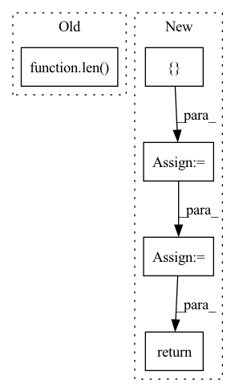

Pattern ID :3035
Before Change
output_a = self.model_a(**a)
output_b = self.model_b(**b)
outputs = []
for i in range(len( output_a) ):
outputs.append(output_a[i] + output_b[i])
return outputsAfter Change
b.pop("labels")
output_a = self.model_a(**a)[1] // [bs, seq_len, 768]
output_b = self.model_b(**b)[1]
output = torch.cat([ output_a, output_b, output_a-output_b = self.linear(output)
loss = self.loss_fct(logits, labels)
return loss, logits
class SiameseTransformerAdd(nn.Module):In pattern: SUPERPATTERN
Frequency: 4
Non-data size: 5
Instances Fragment ID: 10023420
Project Name: prajjwal1/fluence
Commit Name: 384e5722f994d3a39d54cf057a0a48a996206bbf
Time: 2020-08-03
Author: prajjwalin@protonmail.com
File Name: fluence/models/siamese_model.py
M Class Name: SiameseTransformer
N Class Name: SiameseTransformer
M Method Name: forward(3)
N Method Name: forward(3)
M Parent Class: nn.Module
N Parent Class: nn.Module
M File Name: fluence/models/siamese_model.py
N File Name: fluence/models/siamese_model.py
M Start Line: 22
M End Line: 28
N Start Line: 24
N End Line: 32
Before Change
xyz, point_features = torch.split(points, [3, 1], dim=-1)
keypoints_xyz, keypoints_features = self.sample_keypoints(xyz, point_features)
out = [(point_features, xyz)] + out
for i in range(len( self.cfg.strides) ):
voxel_features_i, voxel_coords_i = out[i]
voxel_coords_i = voxel_coords_i.unsqueeze(0).contiguous()
voxel_features_i = voxel_features_i.unsqueeze(0).permute(0, 2, 1).contiguous()After Change
points, features, coordinates, voxel_population = self.voxelize(points)
cnn_out = self.cnn(features, coordinates, batch_size=1)
point_xyz, point_features = torch.split(points, [3, 1], dim=-1)
cnn_out = [ (point_xyz, point_features) = self.pnet_forward(cnn_out, keypoint_xyz)
return pnet_out
def main(): Fragment ID: 10023432
Project Name: jhultman/vision3d
Commit Name: 1d8a72fc38c04ef4a2ca6516f91c20cd89d4b46d
Time: 2020-02-03
Author: 27909223+jhultman@users.noreply.github.com
File Name: pvrcnn/main.py
M Class Name: PV_RCNN
N Class Name: PV_RCNN
M Method Name: forward(2)
N Method Name: forward(2)
M Parent Class: nn.Module
N Parent Class: nn.Module
M File Name: pvrcnn/main.py
N File Name: pvrcnn/main.py
M Start Line: 141
M End Line: 151
N Start Line: 161
N End Line: 167
Before Change
outputs = [inters[0]]
for i, conv in enumerate(self.output_convs):
out = F.interpolate(outputs[-1], scale_factor=0.5, mode="nearest") // resize(P3td)
if i < len( self.output_convs) - 1:
out = self.fuse([x[i+1], inters[i+1], out]) // P4in + P4td + resize(P3td)
else:
out = self.fuse([inters[i+1], out]) // P7in + resize(P6td)After Change
def forward(self, x: List[torch.Tensor]) -> List[torch.Tensor]:
// top-down
tds = [ None = self.td_fuses[i]([x[i], self.upsample(tds[i+1])]) // P6td = conv(P6in + resize(P7td))
// bottom-up
outs = [None] * self.num_levels
outs[0] = tds[0]
for i in range(self.num_levels - 2):
outs[i+1] = self.out_fuses[i]([x[i+1], tds[i+1], self.downsample(tds[i])]) // P4in + P4td + resize(P3td)
outs[-1] = self.out_fuses[-1]([x[-1], self.downsample(tds[-2])]) // P7in + resize(P6td)
return outs
class WeightedFeatureFusion(nn.Module): Fragment ID: 10023436
Project Name: gau-nernst/vision-toolbox
Commit Name: 0844b6bcb142e63b09cf6ae44e5087c20d52c380
Time: 2022-04-10
Author: gau.nernst@yahoo.com.sg
File Name: vision_toolbox/necks.py
M Class Name: BiFPNLayer
N Class Name: BiFPNLayer
M Method Name: forward(2)
N Method Name: forward(2)
M Parent Class: nn.Module
N Parent Class: nn.Module
M File Name: vision_toolbox/necks.py
N File Name: vision_toolbox/necks.py
M Start Line: 163
M End Line: 180
N Start Line: 160
N End Line: 172
Before Change
block_args = route_args(self.args_route, kwargs, len(self.blocks))
if self.training and self.layer_dropout > 0:
to_drop = torch.empty(len( self.blocks) ).uniform_(0, 1) < self.layer_dropout
blocks = [block for block, drop in zip(self.blocks, to_drop) if not drop]
blocks = self.blocks[:1] if len(blocks) == 0 else blocks
After Change
self.blocks = nn.ModuleList([ReversibleBlock(f=f, g=g) for f, g in blocks])
def forward(self, x, **kwargs):
x = torch.cat([ x, x = _ReversibleFunction.apply(x, blocks, args)
return torch.stack(out.chunk(2, dim=-1)).sum(dim=0)
Fragment ID: 10023422
Project Name: lucidrains/sinkhorn-transformer
Commit Name: d5b9c649e59290b15c15f85d0bb182cb20b699fb
Time: 2020-04-15
Author: lucidrains@gmail.com
File Name: sinkhorn_transformer/reversible.py
M Class Name: ReversibleSequence
N Class Name: ReversibleSequence
M Method Name: forward(2)
N Method Name: forward(2)
M Parent Class: nn.Module
N Parent Class: nn.Module
M File Name: sinkhorn_transformer/reversible.py
N File Name: sinkhorn_transformer/reversible.py
M Start Line: 133
M End Line: 142
N Start Line: 161
N End Line: 174